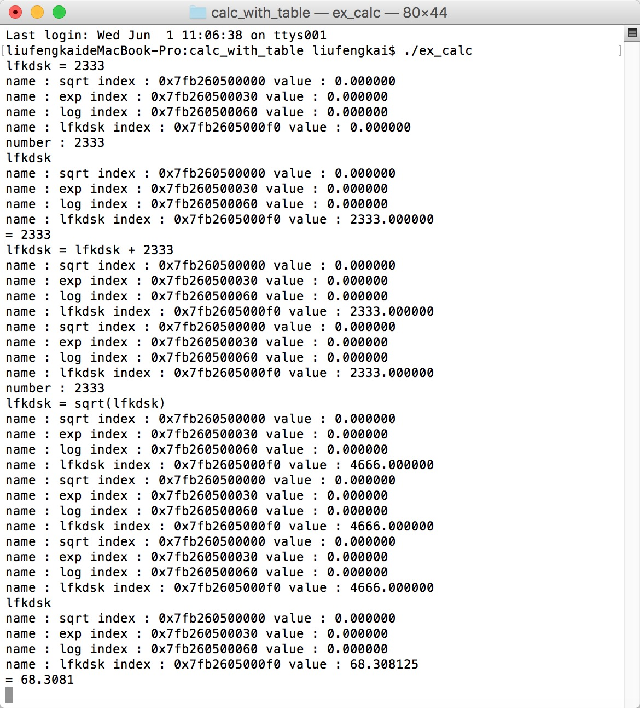

博客地址： http://lfkdsk.github.io
代码地址： https://github.com/lfkdsk/CodeParse
为计算器添加一些新功能
本节代码：CalcWithTable
上次我们使用Lex & Yacc制作了一个能够处理优先级的计算器，其中的优先级的设定是通过修改文法 ，将优先级提升，这次重写这个计算器并添加一些新的功能。
先看Lex文件
%{
#include "y.tab.h"
#include <math.h>
#include "link_list.h"
%}
%%
/* 这段正则和之前都有所不同 明显的增加了对于科学技术法的支持 */
([0-9]+|([0-9]*\.[0-9]+)([eE][-+]?[0-9]+)?) {
/* 转换为double类型 */
yylval.dval = atof(yytext);
/* 我把它打印出来 */
printf("number : %s \n", yytext);
return NUMBER;
}
[ \t] ;
/* 这里提供了对于字母和字母组合的识别 这是对于变量名的识别匹配 */
[A-Za-z][A-Za-z0-9]* {
/* addNode(char *)是link_list.c中的函数 将变量名和对应的参数存储在一个链表中 */
/* 返回值为对应的指针 */
yylval.name = addNode(yytext);
printLink();
/* 返回的Token指变量名 */
return NAME;
}
"$" {
return 0;
}
\n |
. {
return yytext[0];
}
%%
这段代码和之前的区别不大，但是我们明显的为它增加了一个功能，就是识别变量名。
在看yacc：
%{
#include "link_list.h"
int yydebug=1;
#include <math.h>
%}
%union{
double dval;
/* 存储的类型变了 存储的是一个symtable类型的结构体指针 */
struct symtable *name;
}
/* 声明了两个Token 指针类型的NAME double类型的NUMBER */
%token <name> NAME
%token <dval> NUMBER
/* 这里强行指定了左结合以及优先性 */
%left '-' '+'
%left '*' '/'
/* 为一元减号设置了最高的优先级 */
%nonassoc UMINUS
%type <dval> expression
%%
stament_list: stament '\n'
| stament_list stament '\n'
;
/* 增加了一个规则处理变量名赋值 */
stament: NAME '=' expression { $1->value = $3; }
| expression { printf("= %g \n", $1); }
;
expression: expression '+' expression { $$ = $1 + $3; }
| expression '-' expression { $$ = $1 - $3; }
| expression '*' expression { $$ = $1 * $3; }
| expression '/' expression {
if($3 == 0.0){
yyerror("devide by zero");
}else{
$$ = $1 / $3;
}
}
/* 这里再只有一元建好操作符的时候强制使用UMINUS的结合性 */
| '-' expression %prec UMINUS { $$ = -$2; }
| '(' expression ')' { $$ = $2; }
| NUMBER
/* 当出现变量名的时候 把变量名对应的值返回 */
| NAME { $$ = $1->value; }
/* 这也是新功能 计算器支持使用内置函数 当变量名存在函数指针的时候 */
/* 将其作为函数处理 */
| NAME '(' expression ')' {
if ($1->funcptr)
{
$$ = ($1->funcptr)($3);
}else{
printf("%s is not a function \n", $1->name);
$$ = 0.0;
}
}
;
%%
int main(){
extern double sqrt(), exp(), log();
/* 现在无法动下的生成函数 所以只能添加内置的几种函数 */
addFunction("sqrt", sqrt);
addFunction("exp",exp);
addFunction("log",log);
yyparse();
}
现在的yacc文件中我们支持了变量名的申请，和函数的调用，这里面我们的函数都来自于link_list.h中的定义
link_list.h :
#ifndef SYMBOL
#include <string.h>
#include <stdio.h>
#include <stdlib.h>
struct symtable {
/* data */
char *name;
double value;
/* 函数指针 */
double (*funcptr)();
struct symtable *next;
};
struct symtable* addNode(char *symbol);
void printLink();
void addFunction(char *name, double func());
#endif
link_list.c :
#include "link_list.h"
struct symtable *head = 0;
int flag = 0;
struct symtable* addNode(char *symbol){
if (flag == 0) {
flag = 1;
head = (struct symtable*)malloc(sizeof(struct symtable));
head->name = strdup(symbol);
head->next = 0;
return head;
}
struct symtable *sp = head;
while (sp != 0) {
if (sp->name && !strcmp(sp->name, symbol)) {
/* 找到一样的了 */
return sp;
}
if (!sp->name) {
sp->name = strdup(symbol);
return sp;
}
sp = sp->next;
}
sp = head;
while (sp->next != 0) {
sp = sp->next;
}
struct symtable *tail;
tail = (struct symtable*)malloc(sizeof(struct symtable));
tail->name = strdup(symbol);
tail->next = 0;
sp->next = tail;
return tail;
}
void printLink(){
struct symtable* sp = head;
while (sp != 0) {
printf("name : %s index : %p value : %f \n", sp->name, sp, sp->value);
sp = sp->next;
}
}
void addFunction(char *name, double func()){
struct symtable* sp = addNode(name);
sp->funcptr = func;
}
至此我们的计算器就能支持参数名和内置函数了。
我们来写一下makefile文件:
ex_calc: y.tab.o lex.yy.o link_list.o
$ cc -o ex_calc link_list.c y.tab.c lex.yy.c -ly -ll
link_list.o: link_list.c link_list.h
lex.yy.o: lex.yy.c y.tab.h
lex.yy.o y.tab.o: link_list.h
y.tab.c y.tab.h: ex_calc.y
$ yacc -d ex_calc.y
lex.yy.c: ex_calc.l
$ lex ex_calc.l
之后使用make命令编译运行，就可以正常使用了。
